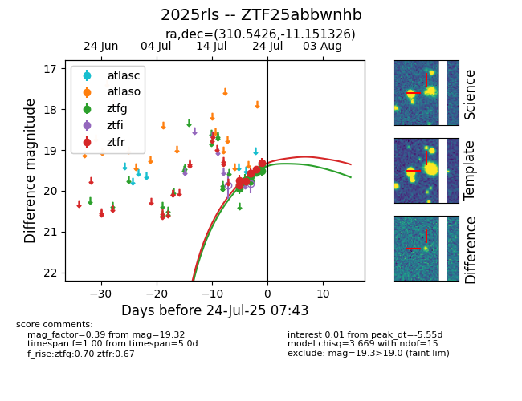

Target ZTF25abbwnhb at 2025-07-24 07:43, see:
FINK: fink-portal.org/ZTF25abbwnhb
Lasair: lasair-ztf.lsst.ac.uk/objects/ZTF25abbwnhb
ALeRCE: alerce.online/object/ZTF25abbwnhb
TNS: wis-tns.org/object/2025rls
YSE: ziggy.ucolick.org/yse/transient_detail/2025rls
alt names
ZTF25abbwnhb (ztf,fink)
2025rls (tns,yse)
coordinates:
equatorial (ra, dec) = (310.5426,-11.15133)
galactic (l, b) = (35.2861,-29.59414)
photometry
last ztfg=19.36, ztfr=19.32
11 ztfg, 7 ztfr detections
